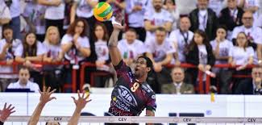

È un ruolo faticoso, perché richiede al giocatore sia di ricevere che attaccare
Per questo è richiesta una certa completezza tecnica nell'esecuzione dei fondamentali.
Velocità, peso e potenza sono le componenti necessarie per essere un'eccellente schiacciatore.
Wilfredo Leòn Venero
Santiago di Cuba,31 luglio 1993
Nazionalità Cuba
Altezza 201cm
Peso 85kg
